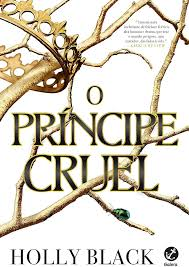

Descrição
Da autora de best-sellers nº 1 do The New York Times , Holly Black, O prínicipe cruel é o primeiro livro da envolvente série O Povo do Ar sobre uma garota mortal que se vê presa em uma teia de intrigas de fadas reais.
Jude tinha apenas sete anos quando seus pais foram brutalmente assasinados e ela e as irmãs levadas para viver no traiçoeiro Reino das Fadas. Dez anos depois, tudo o que Jude quer é se encaixar, mesmo sendo uma garota mortal. Mas todos os feéricos parecem desprezar os humanos... Especialmente o príncipe Cardan, o mais jovem e mais perverso dos filhos do Grande Rei de Elfhame.
Para conquistar o tão desejado lugar na Corte, Jude precisa desafiar o príncipe - e enfrentar as consequências do ato.
A garota passa, então, a se envolver cada vez mais nos jogos e intrigas do palácio, e acaba descobrindo a própria vocação para trapaças e derramamento de sangue. Mas quando uma traição ameaça afogar o Reindo das Fadas em violência, Jude precisará arriscar tudo em uma perigosa aliança para salvar suas irmãs - e a própria Elfhame.
Cercada por mentiras e pessoas que desejam destruí-la , Jude terá que descobrir o verdadeiro significado da palavra poder antes que seja tarde demais.
Com personagens únicos, reviravoltas inesperadas, e uma traição de tirar o fôlego, O príncipe cruel vai deixar o leitor querendo mergulhar de cabeça na continuação deste universo.